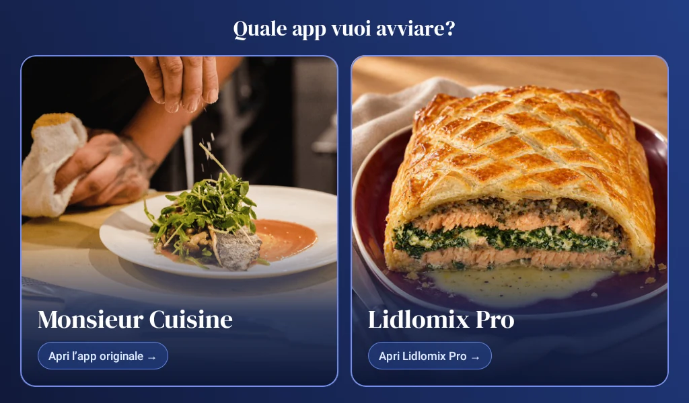
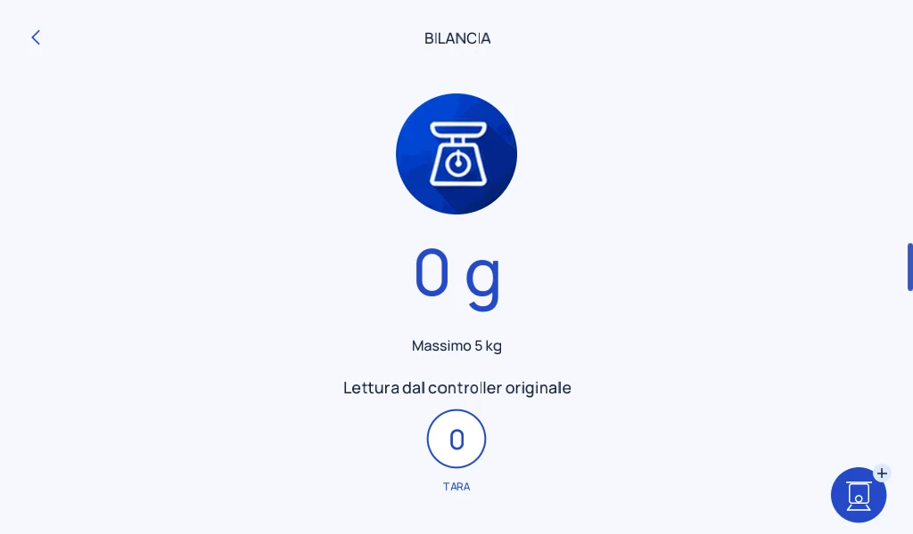
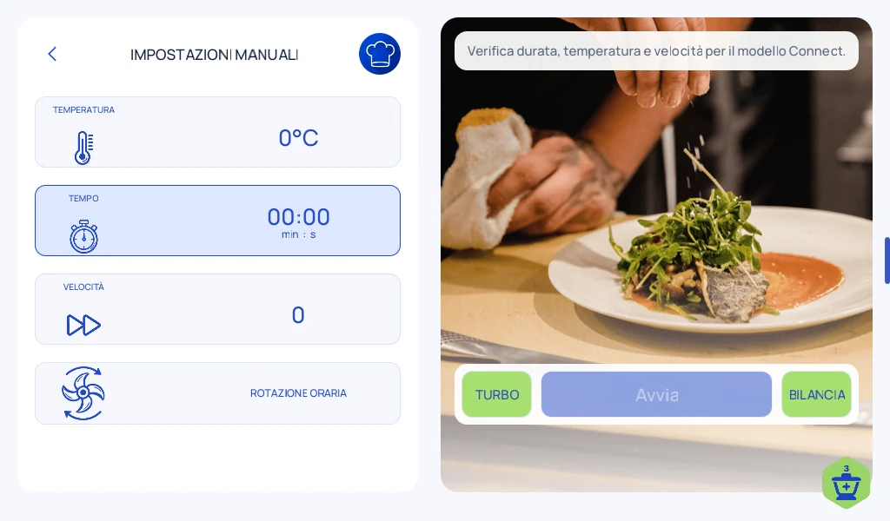
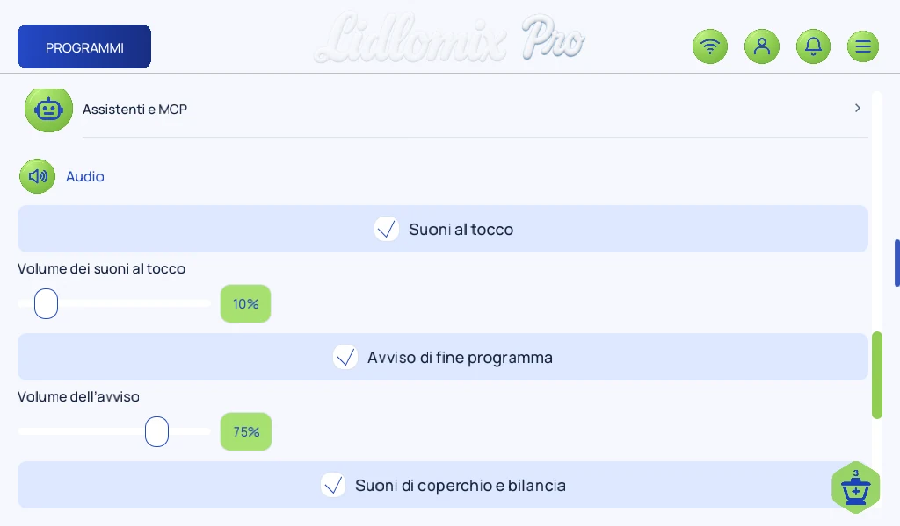

Tutto è iniziato con un quaderno macchiato, pieno di ricette scritte a mano. L’assistente leggeva la fotografia di una pagina e permetteva di correggere i passaggi poco chiari. Poi convertiva misure come una manciata di noci in quantità da pesare e preparava istruzioni e programmi per Monsieur Cuisine.

L’obiettivo successivo era aprire la ricetta adattata sul robot. Dopo i primi tentativi e alcune connessioni interrotte, all’avvio si poteva scegliere tra l’app di fabbrica e Lidlomix Pro.

La ricetta preparata in ChatGPT si poteva salvare in JSON, inviare dal telefono via Wi-Fi e controllare sul Connect. Il robot indicava gli ingredienti da aggiungere, le pesature e le impostazioni dei passaggi supportati.

Temperatura e velocità hanno adottato comandi orizzontali, con colonne separate per minuti e secondi. Gli strumenti rapidi si potevano aprire durante una ricetta e permettevano di tornare al passaggio in corso.

Il pulsante Avvia è rimasto visibile durante le regolazioni. Pausa e ripresa sono state migliorate, Turbo e pulizia intensiva sono stati rivisti ed è arrivata l’anteprima dei suoni.

Il WunderPeeler ha ricevuto un programma dedicato con pesatura e istruzioni illustrate di montaggio. I cataloghi sono stati separati e Connect ha ricevuto gli aggiornamenti online con un indicatore di scaricamento.